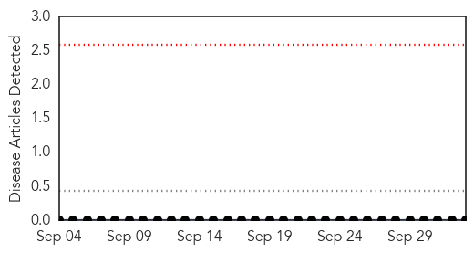
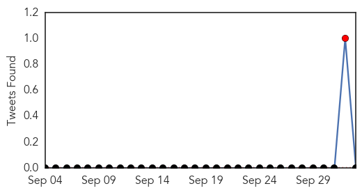
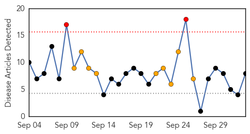
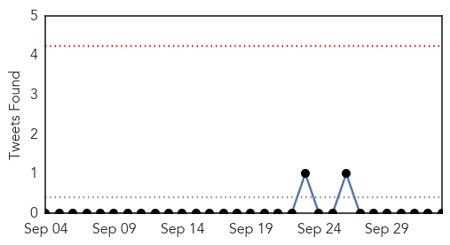
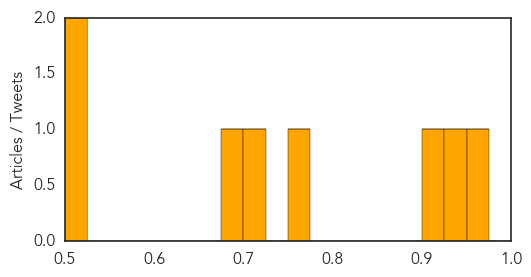

Yellow Fever
30-Day Web Trend
0 alerts, 0 warnings

30-Day Twitter Trend
1 alerts, 0 warnings

Article Locations

Article Confidences

Top Articles:
-
No articles found for Oct 03, 2014
Top Tweets:
-
No tweets found for Oct 03, 2014
Dengue Fever
30-Day Web Trend
2 alerts, 9 warnings

30-Day Twitter Trend
0 alerts, 0 warnings

Article Locations

Article Confidences
Top Articles:
- 0.972
- Soaring numbers: Dengue patients in Pindi surge to 65
- 0.946
- 71 new dengue cases in Odisha
- 0.909
- China Focus: Guangdong dengue fears reach fever pitch - Xinhua
- 0.762
- The most from the coast
- 0.703
- Vaccinated Mosquitos Will Combat Dengue
- 0.678
- Look out for Chik-V, Dengue symptoms in your kids, education minister cautions
- 0.517
- 'Vaccinated' mosquitoes released in Rio to combat dengue -The Tico Times
- 0.501
- Papaya’s Bitter Pill For Dengue Made Palatable
Top Tweets:
-
No tweets found for Oct 03, 2014